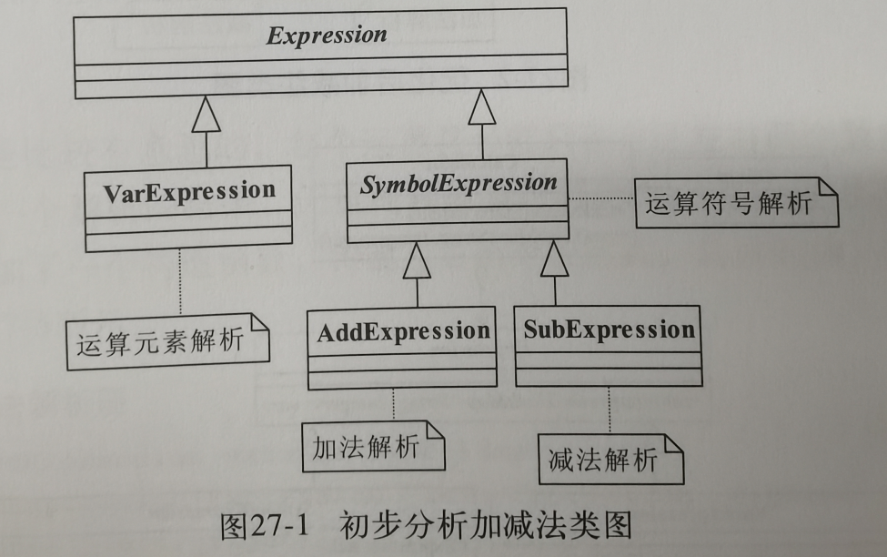
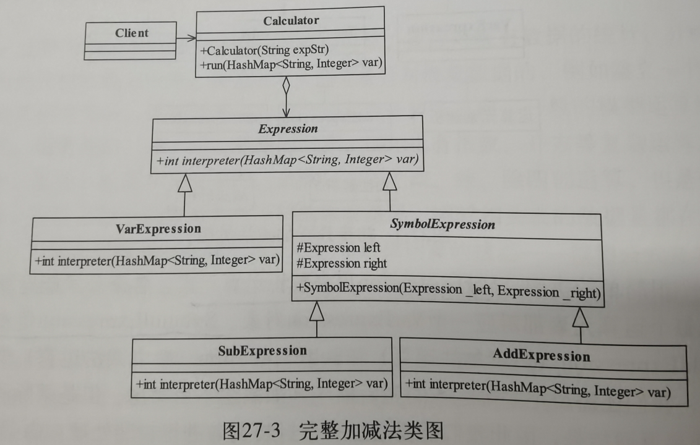
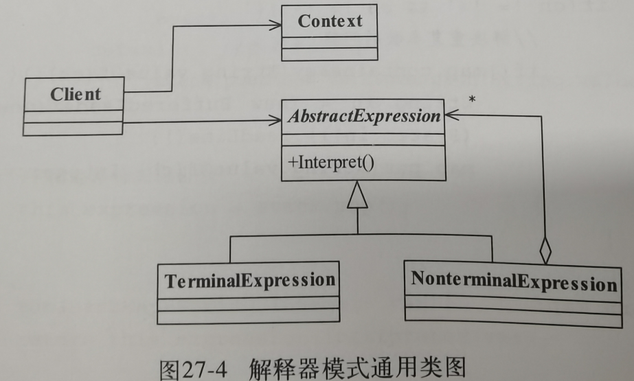

27.解释器模式
1.例子引入
情境:加减乘除四则运算
VarExpression运算元素
需要计算用的值
SymbolExpression抽象符号解析器
定义符号解析器需要执行的操作
AddExpression和SubExpression具体符号解析
对不同的符号做出计算处理操作

Expression表达式抽象类:
所有表达式都需要对传入的式子进行解析,分离
Calculator计算器类
对整个表达式的逻辑进行封装,让客户端调用它就可以了
VarExpression和SymbolExpressoin原本的元素表达式和符号表达式
定义两种不同类型的元素处理方式
SubExpression和AddExpression具体的符号表达式,实现计算逻辑

2.正式定义
Given a language,define a representation for its grammar along with an interpreter that uses the representation to interpret sentences in the language.
翻译:给定一门语言,定义它的文法的一种表示,并定义一个解释器,该解释器使用该表示来解释语言中的句子.
AbstaractExpression抽象解释器
定义所有的解释器需要实现的逻辑框架
TerminalExpression元素表达式
通常是数值对象
NonterminalExpression非最终表达式
也就是符号表达式,用来解析不同的文法规则
Context环境角色
进行沟通的封装角色

3.应用和扩展
优点:
修改语法规则只要修改相应的符号即可
缺点:
每个语法都要有一个新的类,然后是递归调用效率很差.
应用场景:大量重复发生的问题
4.助记小故事
小熊的英语字典和语法书
小熊买了一本英文书,但是看不懂,正苦恼的时候小兔提供了一本英文字典(就是红色大部头牛津词典),小熊现在就可以根据字典上面来看书了,但是现在只有单词,究竟要按照什么顺序来翻译?这就需要另外一本语法书,它讲了如何将这些词按照什么逻辑组织起来,这本字典就是元素表达式,语法书就是符号表达式,他们解释翻译了内容.这就是解释器模式